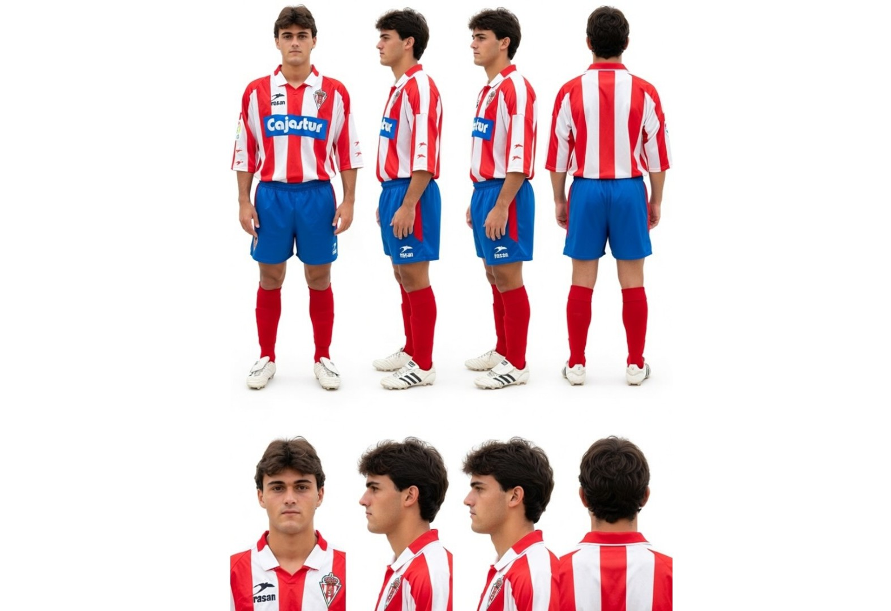
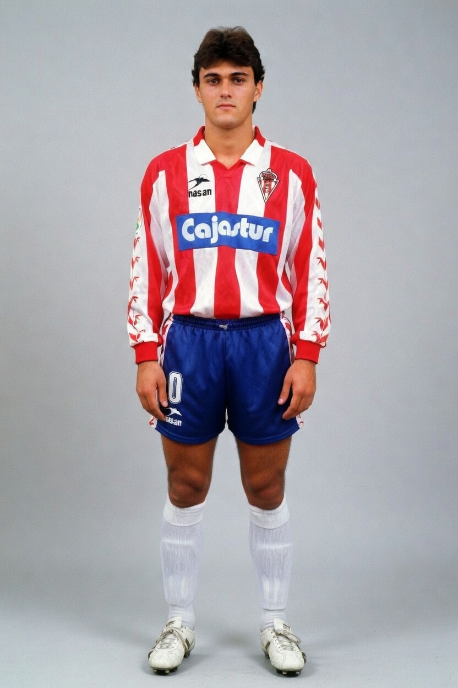

Luis Enrique
Guión
Hola, soy Luis Enrique Martínez García… pero para la gente de Gijón siempre seré Lucho. Nací el 8 de mayo de 1970 en Gijón, en el corazón de Asturias. Desde que tengo uso de razón, el fútbol y el Real Sporting han sido parte de mi vida.
Entré con siete años en la Escuela de Fútbol de Mareo. Era un chaval flaco, muy delgado… Hubo dos o tres años en los que casi no jugaba porque no tenía fuerza. Pero nunca me rendí. Entrenaba con ilusión y al mejor nivel posible. Al final, esa constancia me abrió las puertas.
Pasé por el Sporting Atlético y, el 24 de septiembre de 1989, debuté con el primer equipo en Primera División, en El Molinón, contra el Málaga. ¡Qué emoción! Al año siguiente, con Ciriaco Cano, me consolidé como delantero y metí 14 goles. Ese Sporting me dio todo: mi primer contrato profesional, mi apodo “Lucho” (por el mexicano Luis Flores) y la sensación de que estaba viviendo un sueño en mi casa.
El Sporting es mi origen. Es el club que me formó como persona y como futbolista. Siempre lo llevaré en el corazón. La Mareona, el olor a mar, la gente, Eso no se olvida nunca.
Pero, aunque he entrenado en los mejores clubes del mundo, siempre he dicho que el Sporting es un equipo único para mí. La Mareona y este club son muy especiales.
Mis orígenes son todo. Estoy muy orgulloso de ser gijonés, de haber salido de Mareo y de que la gente del Sporting me siga sintiendo uno más. Porque, al final, todo empezó ahí: en un niño flaco que soñaba con jugar en El Molinón. Gracias, Sporting. Siempre."
Hoja de referencia

Personaje
